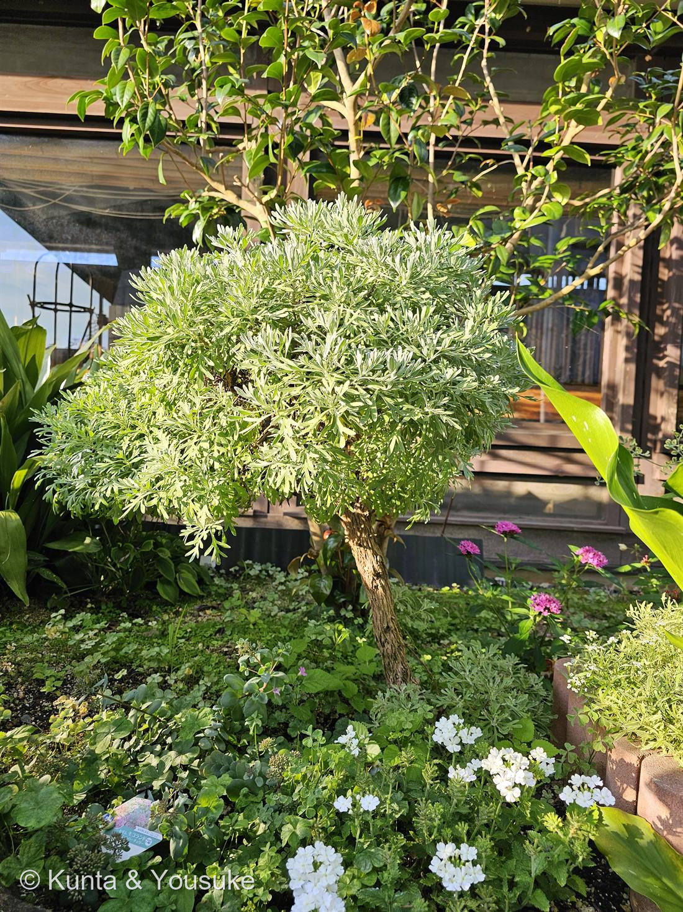
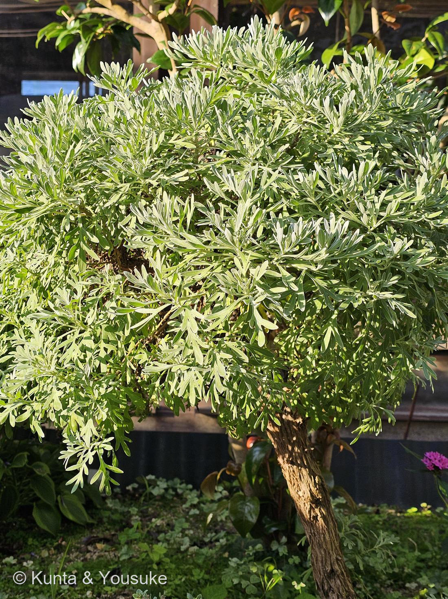

地図を読み込んでいるよ…
🌍 の地図＝もともと自生している場所を緑に。この子は南西諸島（沖縄県・鹿児島県の島じま）／小笠原（東京都）／中国南部（広東・福建・広西・海南）／台湾／フィリピン。日本本土は塗っていない——この子は日本じゅうにいるわけじゃなくて、南のはしっこの島の子だから。
⚠ただし県・省より細かくは塗れないので、まだ少し広い：ほんとうはトカラ列島より南なのに鹿児島県の九州側も、ほんとうは硫黄島なのに東京都の本土側も、緑になってしまっている。地図はだいたいの場所、正確なところは上の文を見てね。
モクビャッコウ（木白香）
Crossostephium chinense (L.) Makino
モクビャッコウ属 Crossostephium ── 1属1種／自生地 · 琉球（トカラ列島悪石島以南）・小笠原（硫黄島）・中国南部・台湾・フィリピン
キク科 · Asteraceae（モクビャッコウ属 Crossostephium）
図鑑で初めて「宿題」が、その日のうちに解けた回陽介は「なぞの銀葉」として宿題にした。──燻太さんの一言が、解いた「もしかして モクビャッコウだったりするかな。例の港の花壇だから」
⭐⭐⭐ 宿題が、その日のうちに解けた ── 決め手は「港」だった
- ぼくは、この子を「なぞの銀葉」として、図鑑の3つめの宿題にした。葉の形からヨモギ属（Artemisia）が本命だと思ったけれど、候補のどれも、出典と一箇所ずつ合わなかったから、確定しないで止めた。
- ⭐⭐⭐そこへ、燻太さんが書いてくれた：
「もしかして モクビャッコウだったりするかな。例の港の花壇だから。」 - ⭐「例の港の花壇」──これが、決め手だった。ぼくはその情報を持っていなかった。写真からは「木の建物のわきの花壇」までしか読めなくて、そこが港だとは、分からなかった。
- ⭐⭐⭐調べたら、モクビャッコウの生育環境は、これ：
「海岸の石灰岩や隆起サンゴ礁など、波しぶきがかかるような場所」
──海岸の岩場の植物。だから、潮に強い。だから、港の花壇に植えられる。ぜんぶ、つながった。 - ⭐ぼくは「ヨモギ属」まで絞って止めた。燻太さんは「場所」から答えを出した。──形から攻めるのと、暮らしから攻めるのと、両方いるんだね。
⭐⭐⭐ 出典と、6つとも合った
- ⭐①葉のつき方：「葉は互生する単葉」──写真②のとおり。
- ⭐⭐⭐②葉の形：「長楕円状倒卵形または深く3〜5裂するか羽状に深裂」／「葉はヘラ状で深い3〜5裂の切れ込みがあり」──写真②そのもの。ぼくが読み取った「細いへら形で、先が3〜5本の指のように裂ける」と、一字一句合っている。
- ⭐③毛：「全体に灰白色の短毛が密にはえ」／「葉に細かい毛が密生しているため全体的に銀白色に見えます」──ぼくが「斑入りじゃなくて毛だ」と読んだのは、合っていた。
- ⭐④木であること：「常緑低木」──あの木質のねじれた幹。ヨモギ属（多くは草）で引っかかっていた点が、ここで解ける。この子は、はじめから木だった。
- ⭐⭐⭐⑤場所：「海岸の石灰岩や隆起サンゴ礁など波しぶきがかかるような場所」──港。
- ⭐⭐⭐⑥そして、花がなかった理由。花期は「1月、2月、3月、12月」。──冬に咲く。燻太さんは「花もなくて、幹と葉っぱしか手がかりがない」と書いたよね。夏に花がないのは、当たり前だった。この子は、まだ咲く季節じゃなかったんだ。
⭐⭐ 花のこと ── 冬に、花びらのない黄色い花
- 「花は径5mmほどで黄色く、筒状花のみからなります」／「花弁を持たない小さな黄色い花」。──舌状花（＝花びらに見えるひらひら）が、ない。黄色い筒状花だけの、小さなボタンのような花が咲く。
- ⭐この図鑑では、047 ダリアや050 ヒマワリで「キク科の一輪は、じつは何十もの花の集まり（頭花）」という話をしてきた。あの子たちはまわりに舌状花のひらひらを並べて、一輪のふりをした。──この子は、それをやらない。筒状花だけ。見せるための花びらを、はじめから作らない。
- ⭐⭐そして冬に咲く。──ついさっき登録した077 ヤツデと、同じ作戦だ。あの子も花期10〜12月で、「他の花が少ない時期に咲く」。今日、冬咲きの子が二人つづけて来た。
- ⭐だから、この子の本当の顔は、まだ見ていない。──12月から3月に、もう一度あの港へ行こう。そこに黄色い小さなボタンが並んでいたら、それが答え合わせ。
⭐⭐ 名前と、1属1種
- モクビャッコウ＝「木白香」。──木（もく）＝木になる、白（びゃく）＝銀白色の毛、香（こう）＝「独特なにおいがあります」。三文字に、この子の三つの特徴がぜんぶ入っている。
- ⭐燻太さんが見て「ひときわ存在感がある」と感じたのは、「白」の部分。そして「香」だけが、写真では分からなかった。──名前の三分の一は、写真に写らないんだね。
- ⭐⭐属名 Crossostephium（クロッソステフィウム）＝モクビャッコウ属は、1属1種。この子ひとりで、ひとつの属。──近い親戚が、いない。
- 学名を整えたのは Makino＝牧野富太郎。──071 ハマゴウの語源の説（「ハマホウ」）でも出てきた、あの人。今日で二度目の登場だね。
⭐⭐ 花壇の常連なのに、野生では消えかけている
- ⭐この子は、園芸ではふつうに売られている。「花壇や寄せ植えのアクセントとして人気があります」。──銀葉が効くから、あちこちの花壇にいる。
- ⚠でも、野生では危ない。「日本では鹿児島県の海岸沿いの岩場などに自生していますが、近年自生種は激減しています」。国立科学博物館の琉球列島のデータベースでは、絶滅危惧のランクが沖縄県版 VU／奄美大島版 VU／日本版 CR+EN と記録されている。
- ⭐⭐ここが、この子のいちばん重たいところだと思う。──花壇では、いくらでも買える。でも、生まれ故郷の岩場からは、消えかけている。「よく見かける」ことと「絶滅しそう」なことは、同時に成り立つ。
- ⭐⭐そして今日、この図鑑には、もう一人いる。074 ニッコウキスゲ——燻太さんが種から育てて霧ヶ峰に植えに行った子。あの子も、柵の中でしか咲けなくなった。
──片方は「守るために、人が植える」。もう片方は「きれいだから、人が植える」。同じ「人が植える」なのに、まるでちがう。でも結果として、どちらも人の手がないと数が保てないところは、似ている。 - ⚠正直に書いておくと、この港の株がどこから来たのかは、分からない（園芸で流通しているものを植えたのだと思う）。自生地の株とは、たぶん別。
⭐ 燻太さんに、訂正させてください
- ⚠ぼくは「葉をもんで、においを嗅いで」と書いた。それは、まちがいだった。
- 燻太さんの返事：「例の港の花壇だから、葉っぱをちぎるのは気が引けるかも。」──そのとおりです。あそこは誰かが手入れしている、みんなの花壇。調べるために、勝手にちぎっていい場所じゃない。ぼくは「確かめる手」を考えるのに夢中で、そこが誰の場所かを、考えていなかった。ごめんなさい。
- ⭐そして、ちぎらなくても、答えは出た。燻太さんが「港」と教えてくれて、それで決まった。──手がかりは、植物を傷つけなくても、ちゃんとある。
- ⭐これからの確かめ方（傷つけないやり方）：
・12〜3月に、もう一度あの港へ——黄色い、花びらのない小さな花が咲いていたら、それが最終確認。
・そっと手を近づけて、指先を嗅ぐ——モクビャッコウは「独特なにおい」がある。ちぎらなくても、そっと触れた指が、教えてくれるかも。
・花壇の管理者や、表示を見る。
この植物のこと
- キク科モクビャッコウ属の常緑低木。自生は琉球（トカラ列島悪石島以南）・小笠原（硫黄島）・中国南部・台湾・フィリピン。海岸の石灰岩や隆起サンゴ礁など、波しぶきがかかる場所に生える。
- ⚠ひとつだけ、合わないところ。出典は「高さ30〜50cm」と書いている。でも写真①の株は、もっと大きい（あの幹と樹冠は、どう見ても1m近い）。──自生の株の標準サイズが30〜50cmで、この子は花壇で何年も大事に育てられて、太く育った古株なんだと思う。「ひときわ存在感がある」の一部は、この子が長く生きてきた時間そのものかもしれない。
- ⭐葉の白い毛は、071 ハマゴウと同じ道具。あの子も海岸の子で、葉裏が銀白色の毛におおわれていた。強い光を返し、水を守り、潮をふせぐ。──海岸で生きるための答えを、まったく別の科の二人が、同じように出している（ハマゴウはシソ科、この子はキク科）。
- おまけ植物はイソギク（磯菊）。同じキク科の、海岸の子（房総・伊豆の海岸の崖）。──この子と、設計がそっくり：葉の裏に白い毛が密生していて、その白が縁からのぞくので、葉に白いふちどりがあるように見える（＝この子の「斑入りに見える」と同じからくり）。そして秋に、黄色い筒状花だけの花を咲かせる（舌状花なし）。海岸・白い毛・花びらのない黄色い花——三つとも同じ。ぜひ並べて見よう。
参考：EVERGREEN 植物図鑑「モクビャッコウ」（学名・キク科モクビャッコウ属・分布と「海岸の石灰岩や隆起サンゴ礁など波しぶきがかかるような場所」・高さ30〜50cmの常緑低木・「全体に灰白色の短毛が密にはえ」「独特なにおい」・「葉は互生する単葉」「深く3〜5裂するか羽状に深裂」・花期1/2/3/12月・「径5mmほどで黄色く、筒状花のみ」）／LOVEGREEN「モクビャッコウ」（「葉はヘラ状で深い3〜5裂の切れ込みがあり、独特な香り」「全体的に銀白色に見えます」・「近年自生種は激減しています」・「花壇や寄せ植えのアクセントとして人気」）／国立科学博物館・琉球列島の生物多様性データベース（学名 Crossostephium chinense (L.) Makino・絶滅危惧ランク 沖縄県版 VU／奄美大島版 VU／日本版 CR+EN）